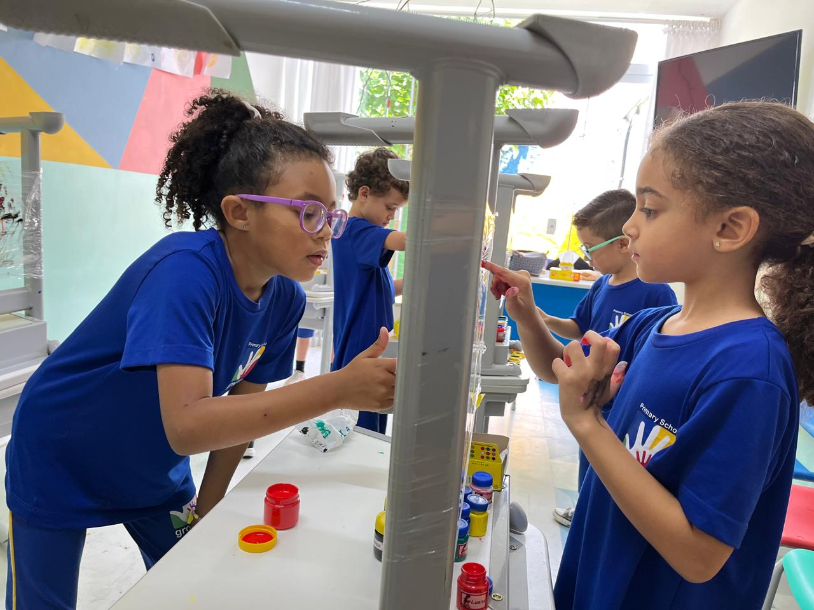
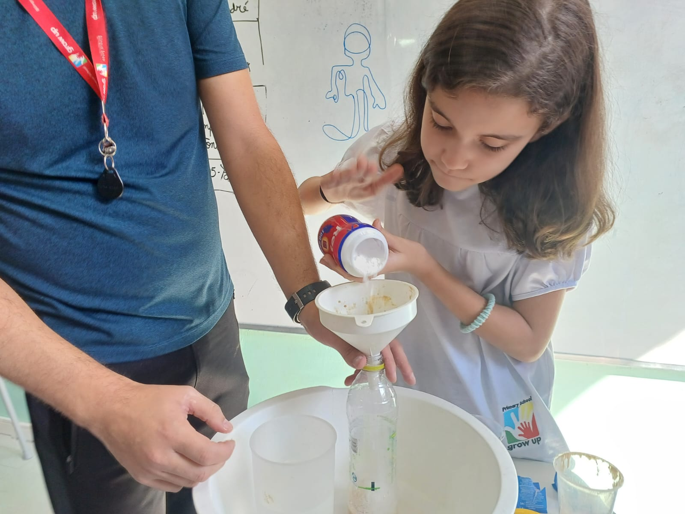
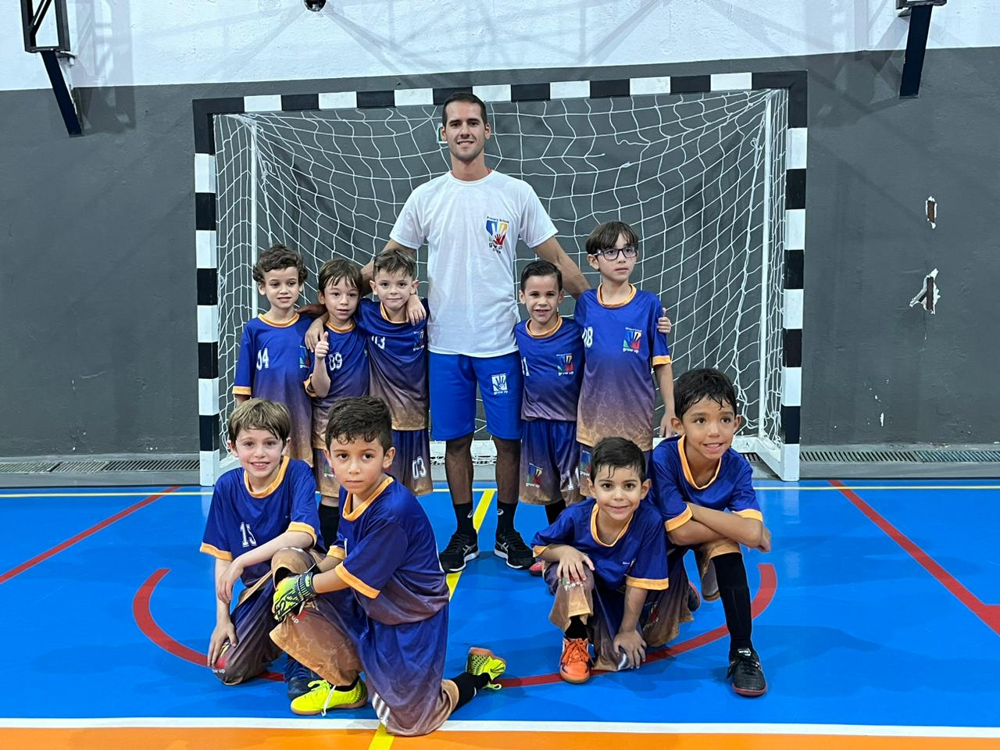
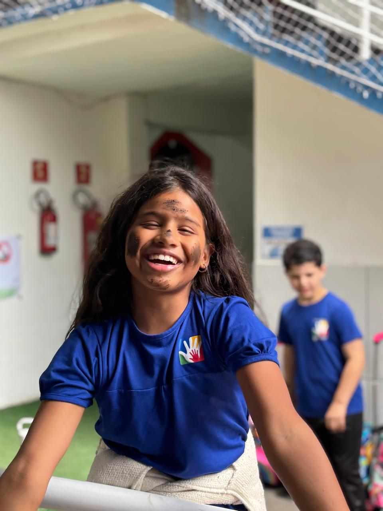
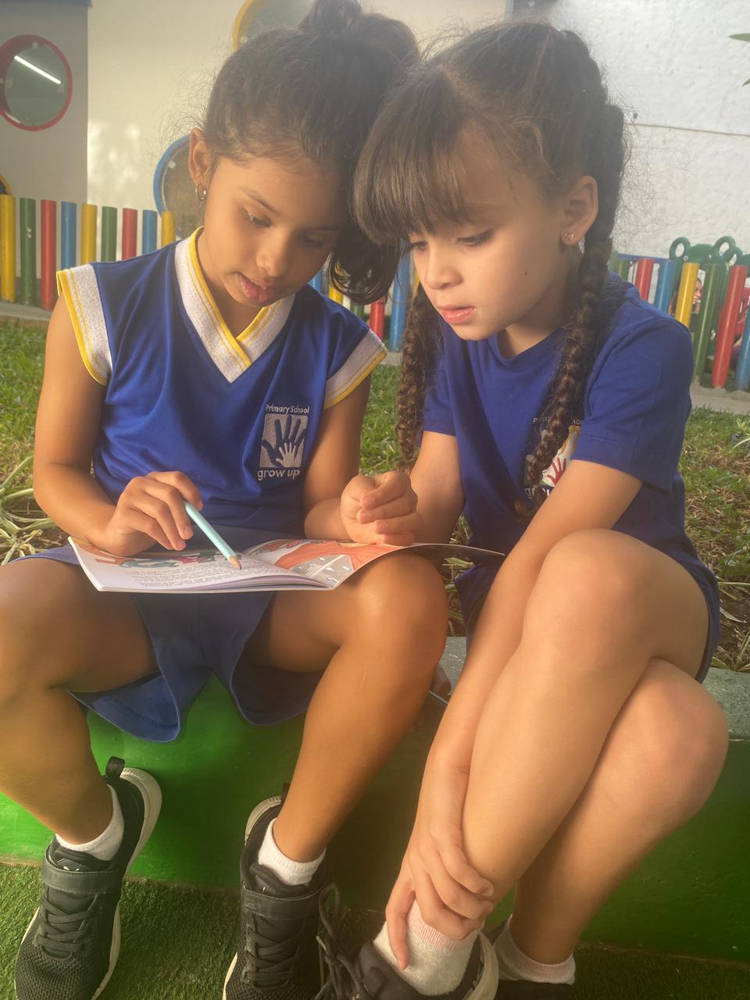

Currículo bilíngue, projetos interdisciplinares e desenvolvimento acadêmico com autonomia para formar alunos preparados para o futuro.

Você procura um lugar onde seu bebê seja acolhido, respeitado e cuidado como merece. Onde o tempo dele seja respeitado. Onde ele seja gente, não número.
Cada gesto da rotina foi planejado para reduzir a ansiedade — sua e dele. Nada aqui é improvisado.
O tempo é dele. Construímos o vínculo com sua família antes de qualquer despedida — sem pressa, sem fórmula.
Relatórios diários da rotina, alimentação e momentos importantes — no grupo da família e no app da escola.
Professoras com formação em Educação Infantil, auxiliares e enfermagem pediátrica de apoio durante toda a jornada.
Sono, brincadeira, refeições e estímulos com horários previsíveis — porque previsibilidade é segurança para bebês.
Câmeras, controle de acesso, móveis em escala infantil e mapeamento de risco em cada metro quadrado.
Turmas reduzidas para que cada bebê seja visto, chamado pelo nome e tenha seu jeito respeitado.
Sem poses. Sem cenário montado. Apenas a vida dos bebês acontecendo — do café da manhã ao soninho da tarde.

Brincar é trabalho sério
Cada descoberta, celebrada
Manhã de sol no parquinho
Hora da históriaPela música, pela rotina, pelas brincadeiras e pelas interações do dia a dia, seu bebê cresce familiarizado com um novo idioma — de forma leve, respeitando o tempo dele.
Não prometemos fluência aos 2 anos. Prometemos uma criança que cresce com o som de um segundo idioma como parte da vida — sem cobrança, sem prova.
Pequeno por escolha. Atento por princípio. Cada criança recebe o olhar que merece — porque ninguém cresce sendo número.
Até 6 bebês por educadora. Atenção que não escala — e por isso vale tanto.
Professora titular e auxiliar em sala, sempre. Nenhum bebê fica sem alguém por perto.
Reuniões, conversas diárias e portas abertas. Você não entrega — você divide.
Mais de uma década recebendo as primeiras palavras, os primeiros passos, os primeiros amigos.
Histórias reais de quem confiou os primeiros anos do filho à Grow Up.
Eu chorei no primeiro dia. Hoje meu filho entra sorrindo, solta a minha mão e corre pra abraçar a professora. Não tem preço.
Voltei a trabalhar tranquila. As fotos chegam todos os dias, a professora responde no grupo. Sinto que tenho parceiras, não babás.
A adaptação foi o que mais me marcou. Respeitaram o tempo dele de verdade. Nada de empurrar, nada de pressa. Hoje ele dorme aqui sem mim — e isso é amor.
Quando as vagas do Fundamental I fecham, não abrimos novas turmas no mesmo semestre. Isso é o que nos permite cuidar de cada bebê do jeito que ele merece.
Venha sentir o ambiente, conhecer a equipe e entender no seu tempo se este é o lugar certo para o seu bebê.
Se sua dúvida não estiver aqui, é só chamar no WhatsApp. A gente responde com calma.